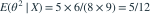

先验θ服从Beta(1,1)。给定θ，各次试验条件独立为Bernoulli(θ)。观察4次成功、2次失败后，未来两次都成功的后验预测概率为？
- A
- B
- C
- D

我已思考，展开答案与解析
正确答案：B
- 后验为Beta(5,3)。未来两次给定θ时均成功的概率为θ²。
- 预测概率为后验二阶矩

。
易错提醒积分消去共同θ后，未来结果不再相互独立；不能直接平方后验均值5/8。
考后回忆 · 条件重建 · 回忆6的后验预测补强
依据考试回忆重建；数字、选项和必要条件为补充设定，非原题。